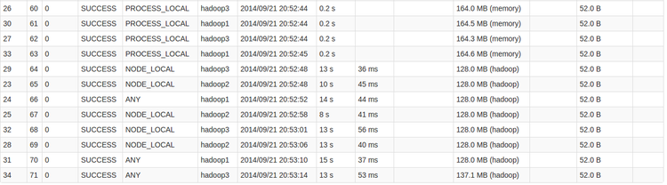

SparkSQL调优
并行性
SparkSQL在集群中运行，将一个查询任务分解成大量的Task分配给集群中的各个节点来运行。通常情况下，Task的数量是大于集群的并行度。shuffle的时候使用了缺省的spark.sql.shuffle.partitions，即200个partition，也就是200个Task。
而如果实验的集群环境却只能并行3个Task，也就是说同时只能有3个Task保持Running。
这时大家就应该明白了，要跑完这200个Task就要跑200/3=67批次。如何减少运行的批次呢？那就要尽量提高查询任务的并行度。查询任务的并行度由两方面决定：集群的处理能力和集群的有效处理能力。
对于Spark Standalone集群来说，集群的处理能力是由conf/spark-env中的SPARK_WORKER_INSTANCES参数、SPARK_WORKER_CORES参数决定的；而SPARK_WORKER_INSTANCES*SPARK_WORKER_CORES不能超过物理机器的实际CPU core；
集群的有效处理能力是指集群中空闲的集群资源，一般是指使用spark-submit或spark-shell时指定的--total-executor-cores，一般情况下，我们不需要指定，这时候，Spark Standalone集群会将所有空闲的core分配给查询，并且在Task轮询运行过程中，Standalone集群会将其他spark应用程序运行完后空闲出来的core也分配给正在运行中的查询。
综上所述，sparkSQL的查询并行度主要和集群的core数量相关，合理配置每个节点的core可以提高集群的并行度，提高查询的效率。
高效的数据格式
高效的数据格式，一方面是加快了数据的读入速度，另一方面可以减少内存的消耗。高效的数据格式包括多个方面。
数据本地性
分布式计算系统的精粹在于移动计算而非移动数据，但是在实际的计算过程中，总存在着移动数据的情况，除非是在集群的所有节点上都保存数据的副本。移动数据，将数据从一个节点移动到另一个节点进行计算，不但消耗了网络IO，也消耗了磁盘IO，降低了整个计算的效率。为了提高数据的本地性，除了优化算法（也就是修改spark内存，难度有点高），就是合理设置数据的副本。设置数据的副本，这需要通过配置参数并长期观察运行状态才能获取的一个经验值。
下面是spark webUI监控Stage的一个图：

- PROCESS_LOCAL是指读取缓存在本地节点的数据
- NODE_LOCAL是指读取本地节点硬盘数据
- ANY是指读取非本地节点数据
- 通常读取数据PROCESS_LOCAL>NODE_LOCAL>ANY，尽量使数据以PROCESS_LOCAL或NODE_LOCAL方式读取。其中PROCESS_LOCAL还和cache有关。
合适的数据类型
对于要查询的数据，定义合适的数据类型也是非常有必要。对于一个tinyint可以使用的数据列，不需要为了方便定义成int类型，一个tinyint的数据占用了1个byte，而int占用了4个byte。也就是说，一旦将这数据进行缓存的话，内存的消耗将增加数倍。在SparkSQL里，定义合适的数据类型可以节省有限的内存资源。
合适的数据列
对于要查询的数据，在写SQL语句的时候，尽量写出要查询的列名，如Select a,b from tbl，而不是使用Select * from tbl；这样不但可以减少磁盘IO，也减少缓存时消耗的内存。
更优的数据存储格式
在查询的时候，最终还是要读取存储在文件系统中的文件。采用更优的数据存储格式，将有利于数据的读取速度。查看sparkSQL的stage，可以发现，很多时候，数据读取消耗占有很大的比重。对于sqlContext来说，支持 textFiile、SequenceFile、ParquetFile、jsonFile；对于hiveContext来说，支持AvroFile、ORCFile、Parquet File，以及各种压缩。根据自己的业务需求，测试并选择合适的数据存储格式将有利于提高sparkSQL的查询效率。
内存的使用
spark应用程序最纠结的地方就是内存的使用了，也是最能体现“细节是魔鬼”的地方。Spark的内存配置项有不少，其中比较重要的几个是：
- SPARK_WORKER_MEMORY，在conf/spark-env.sh中配置SPARK_WORKER_MEMORY 和SPARK_WORKER_INSTANCES，可以充分的利用节点的内存资源，SPARK_WORKER_INSTANCES*SPARK_WORKER_MEMORY不要超过节点本身具备的内存容量；
- executor-memory，在spark-shell或spark-submit提交spark应用程序时申请使用的内存数量；不要超过节点的SPARK_WORKER_MEMORY；
- spark.storage.memoryFraction spark应用程序在所申请的内存资源中可用于cache的比例
- spark.shuffle.memoryFraction spark应用程序在所申请的内存资源中可用于shuffle的比例 在实际使用上，对于后两个参数，可以根据常用查询的内存消耗情况做适当的变更。另外，在SparkSQL使用上，有几点建议：
- 对于频繁使用的表或查询才进行缓存，对于只使用一次的表不需要缓存；
- 对于join操作，优先缓存较小的表；
- 要多注意Stage的监控，多思考如何才能更多的Task使用PROCESS_LOCAL；
- 要多注意Storage的监控，多思考如何才能Fraction cached的比例更多
合适的Task
对于SparkSQL，还有一个比较重要的参数，就是shuffle时候的Task数量，通过spark.sql.shuffle.partitions来调节。调节的基础是spark集群的处理能力和要处理的数据量，spark的默认值是200。Task过多，会产生很多的任务启动开销，Task多少，每个Task的处理时间过长，容易straggle。
其他的一些建议
优化的方面的内容很多，但大部分都是细节性的内容，下面就简单地提提：
- 想要获取更好的表达式查询速度，可以将spark.sql.codegen设置为Ture；
- 对于大数据集的计算结果，不要使用collect() ,collect()就结果返回给driver，很容易撑爆driver的内存；一般直接输出到分布式文件系统中；
- 对于Worker倾斜，设置spark.speculation=true 将持续不给力的节点去掉；
- 对于数据倾斜，采用加入部分中间步骤，如聚合后cache，具体情况具体分析；
- 适当的使用序化方案以及压缩方案；
- 善于利用集群监控系统，将集群的运行状况维持在一个合理的、平稳的状态；
- 善于解决重点矛盾，多观察Stage中的Task，查看最耗时的Task，查找原因并改善；